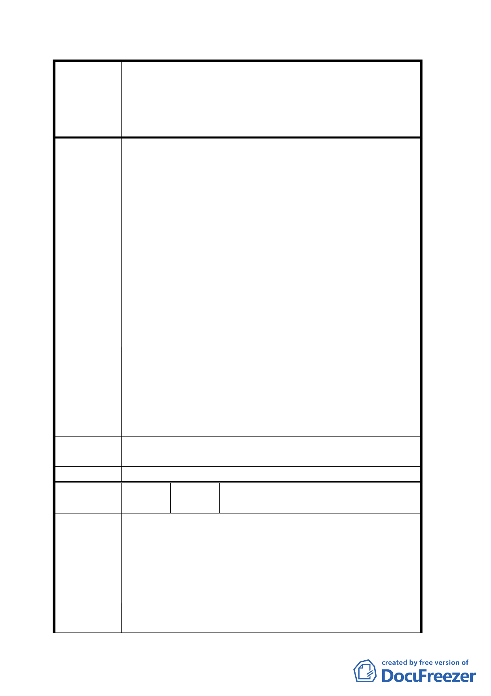

變更臺北市市民大道（新生北路至基隆路段）兩側第四之
一種住宅區、第四種住宅區、第三之二種住宅區、第三之
案 名 一種住宅區、第三種住宅區、道路用地為第三種商業區
（特）、第三種住宅區為公園用地暨劃設都市更新地區計畫
案
商業區（特），依計畫案之建敝率 50％及容積率 225
％初估，僅能起造每層不到 300 坪之四、五層樓商業
建物，土地開發效益過低，停車場規劃更是困難，對
活絡該地區商業活動助益不大。若能擴大計畫更新範
圍，增加基地開發面積，鼓勵開發意願，對市民大道
沿線商業意象之提升及聽車空間之紓解，始具有正面
積極效果。
二、本計畫中曾提及「位於市民大道、復興南路口原黑松汽
水廠廠房，目前為黑松三僑微風廣場商業使用」，微風
廣場自開發完成營運以來，儼然成為帶動該地區發展之
火車頭促進地區商業發展功不可沒，既然微風廣場之敦
化三小段 588-3、589-3、589-7、590、591-3、594、
595 等七筆地號土地已作商業使用為名副其實，請於本
計畫案一併納入為第三種商業區（特）
一、請將敦化段三小段 585、585-7、585-8、585-9、585-10、
585-11、585-12、585-13、585-14 等九筆地號土地全
建議辦法
數納入市民大道都市更新計畫案
二、請將本公司所有敦化三小段 588-3、589-3、589-7、
590、591-3、594、595 等七筆地號土地，全數納入本
計畫更新範圍
專案小組審 該建議地點短期內無調整必要且屬大型開發案，建議另案
查結論
辦理。
委員會決議 同專案小組審查結論。
編
號
５
陳情人
林際泓里長、蘇榮文里長、鍾耀乾里
長、邱國齡里長、李貴三里長
一、本地區環境條件與建國南北路相同，可見容積卻差異
太大，甚不公平
陳情理由
二、容積率提高必須繳納回饋金，無都市更新誘因
三、本案將因大部分土地未繳納回饋金而繼續住宅使用，
而造成住商混合使用之大亂像，破壞都市生活品質。
四、更新時程獎勵時間太短，未及整合。
建
議
辦
法
一、原第四種住宅區變更為第四之一種住宅區（市民大道沿
線 30 公尺範圍）。
一四